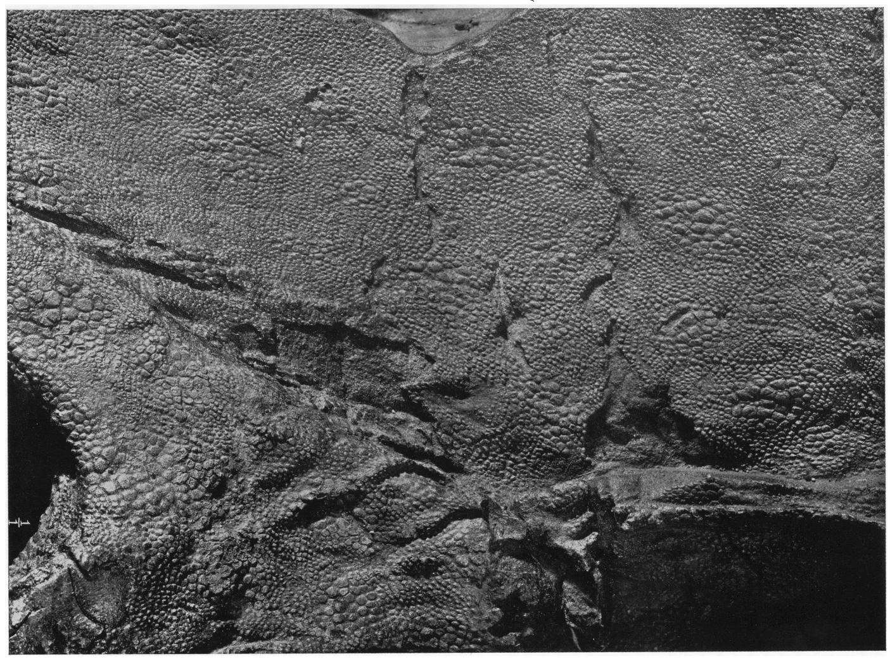
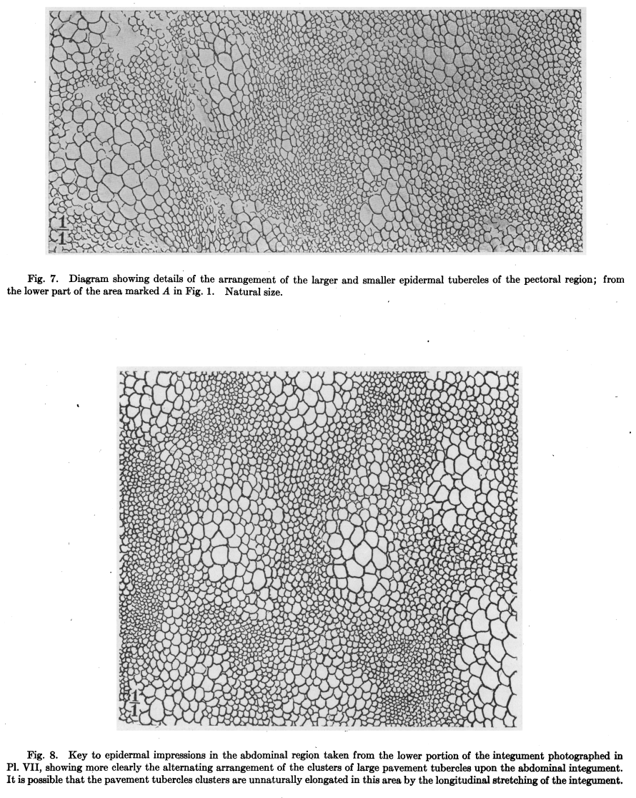
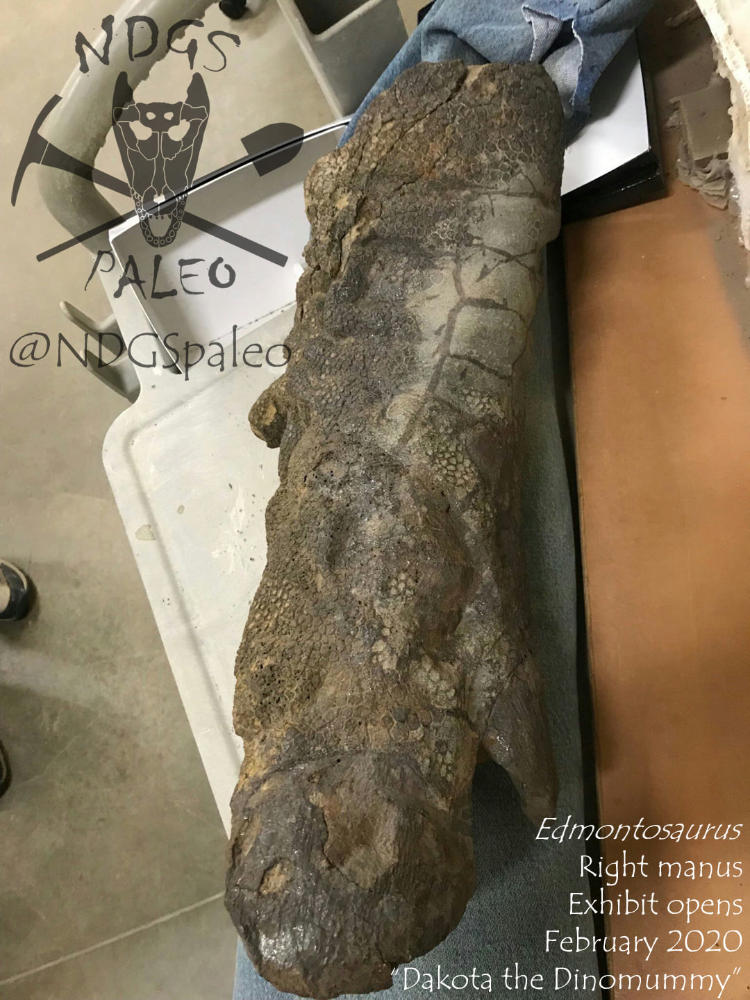
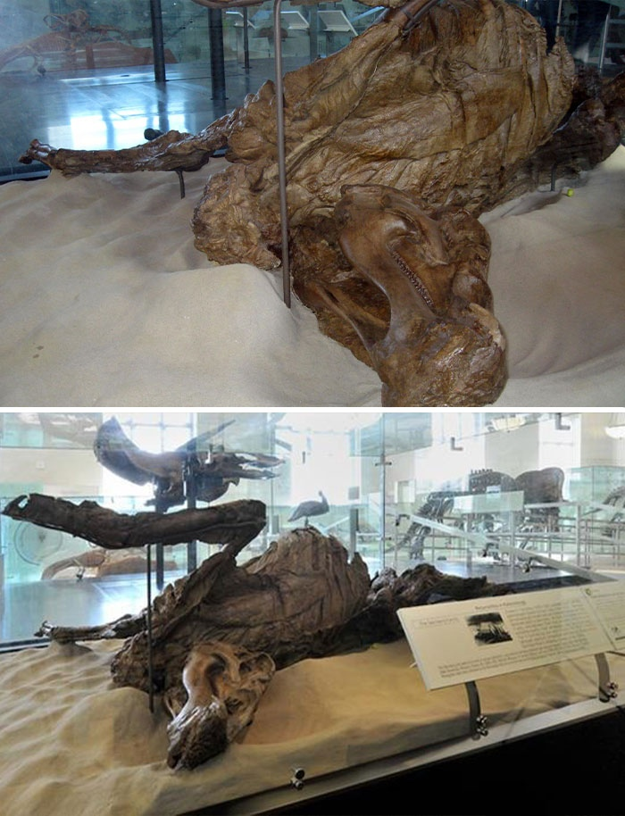
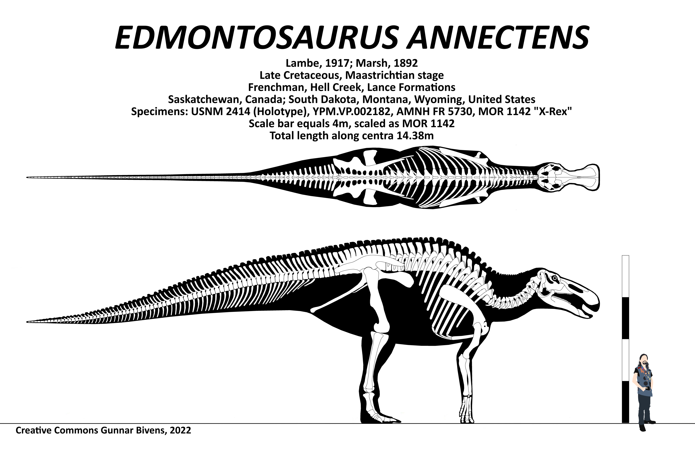

Edmontosaurus annectens
Late Cretaceous (~68–66 million years ago)
USA (North Dakota, Wyoming, Montana)
Hell Creek and Lance Formations
Coloration Data
To date, at least five exceptionally preserved mummified specimens of Edmontosaurus (notably AMNH 5060, SMF R 4036, and NDGS 2000) have been recovered, preserving nearly complete articulated skeletons accompanied by extensive fossilized integument and soft tissues. In Henry Fairfield Osborn's 1912 monograph «Integument of the Iguanodont Dinosaur Trachodon», it was first proposed that scale architecture could reflect underlying epidermal color patterns. Osborn documented that the skin of the AMNH 5060 mummy consisted of fine pavement scales interspersed with irregular clusters of distinctly larger tubercles. He noted: «From analogy with the existing Lacertilia and Ophidia, we may suppose that the pavement tubercle clusters represent the more deeply pigmented areas which, while widely scattered along the ventral surface of the body, were concentrated into large pigmented patches along the back, along the sides of the throat, and on the outer sides of the limbs... The under surfaces of the body may have been correspondingly paler.» A similar relationship between scale morphology and pigment patterns was later proposed by Phillip Manning's team during their investigation of the Edmontosaurus mummy named «Dakota» (NDGS 2000). The localized distribution and sizing of scales on this specimen suggest the presence of a contrasting striped or banded pattern along the forelimbs near the elbow.
Morphological analysis of fossilized scale architecture and integumentary distribution.
Publications
-
HENRY FAIRFIELD OSBORN (1912)
Henry Osborn’s article describing the scales of Edmontosaurus annectens (the outdated name Trachodon annectens is used). -
National Geographic (2007)
The publication is based on a discussion of the “Dakota” specimen with Phillip Manning. -
Stephanie K. Drumheller, Clint A. Boyd , Becky M. S. Barnes, Mindy L. Householder (2022)
An article about the mummification of the NDGS 2000 Edmontosaurus, containing its current artistic reconstruction (but without taking into account the stripes that Manning mentioned).
Documents and files
-
Osborn_1912.pdf (PDF)
Paper by Henry Osborn describing the integument of Edmontosaurus annectens. -
Drumheller_et_al_2022.pdf (PDF)
Article containing an artistic reconstruction of Edmontosaurus annectens.
Reconstructions
 Artistic reconstruction of Edmontosaurus annectens.
Artistic reconstruction of Edmontosaurus annectens.
Fossils

Skin patch of the Edmontosaurus specimen AMNH 5060.
Sketches of Edmontosaurus annectens scales from Osborn (1912).
Forelimb of specimen NDGS 2000.
Mummy of Edmontosaurus.Size comparison

Size of Edmontosaurus annectens.